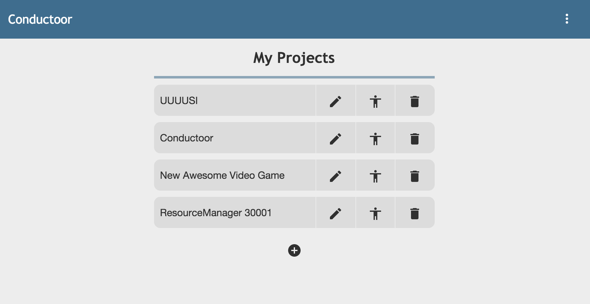
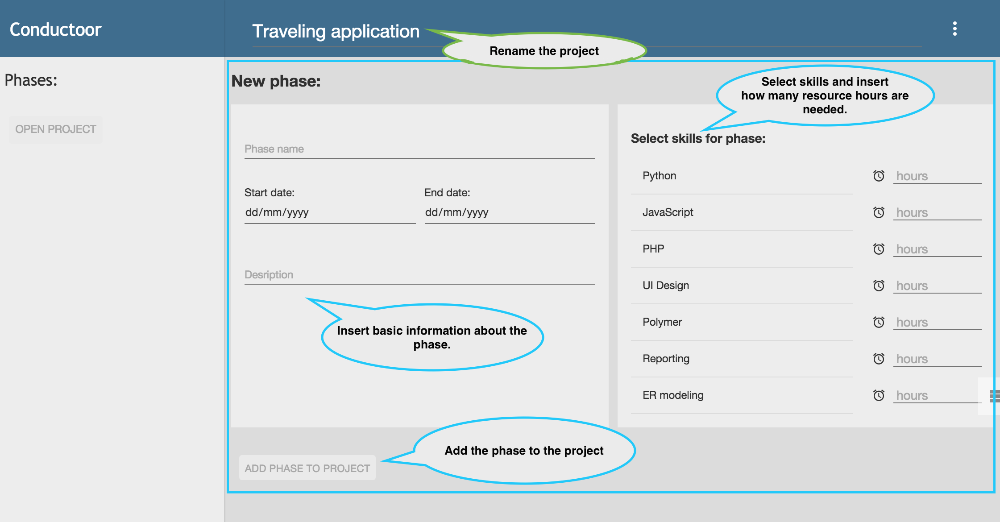
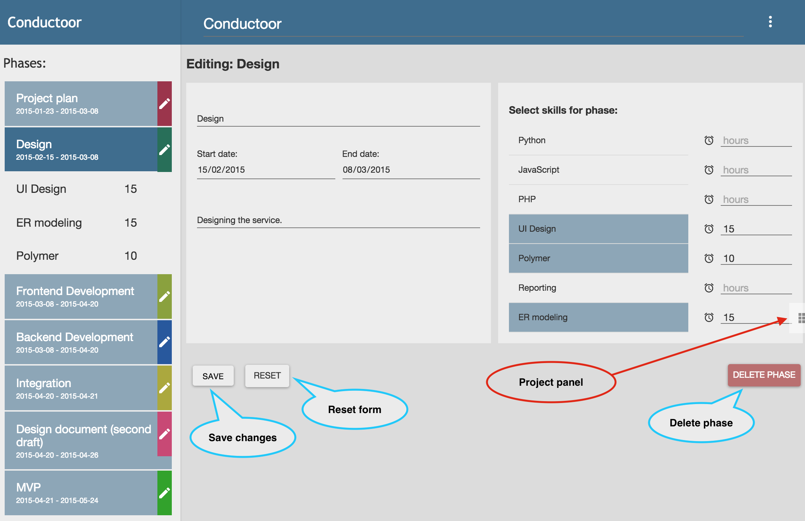
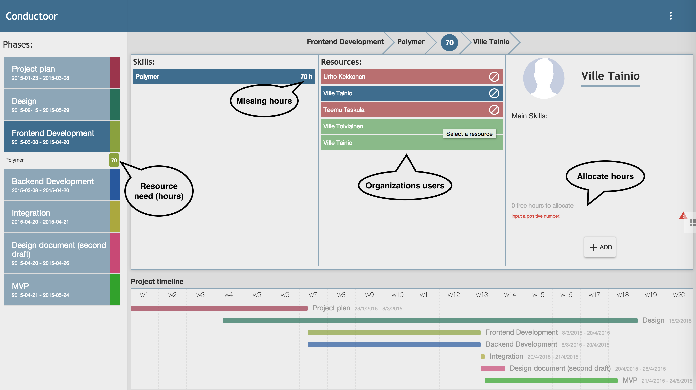

<link rel="import" href="../../bower_components/polymer/polymer.html">

<polymer-element name="conductoor-help-page" attributes="">
  <template>
    <link rel="stylesheet" href="conductoor-help-page.css">
    <!-- build:css styles/main.css -->
    <link rel="stylesheet" href="../../styles/main.css">
    <!-- endbuild-->

    <core-scaffold id="core_scaffold">

      <!-- Toolbar: brand, links to pages, logout -->
      <core-toolbar fullbleed tool flex>
        <h1 horizontal flex>Help page</h1>

        <core-menu-button>
            <core-icon-button icon="more-vert"></core-icon-button>
            <core-dropdown halign="right" class="dropdown" layered>
              <core-menu>
                  <template if="{{ loggedIn }}">
                    <paper-item noink><a href="#/list-projects">My Projects</a></paper-item>
                    <paper-item noink><a href="#/logout">Logout</a></paper-item>
                  </template>
                  <template if="{{  !loggedIn }}">
                    <paper-item noink><a href="#/">Home</a></paper-item>
                  </template>
                  <paper-item noink><a href="#/help">Help</a></paper-item>

              </core-menu>
            </core-dropdown>
        </core-menu-button>

      </core-toolbar>

      <!-- Left panel -->
      <core-header-panel mode="seamed" id="core_header_panel" class="left-panel" navigation flex>

        <core-toolbar tool>
          <a flex id="app-name" href="/">Conductoor</a>
        </core-toolbar>

        <div layout vertical fit id="section-triggers">
          <paper-item target-section="0" on-click="{{changeSection}}">My projects</paper-item>
          <paper-item target-section="1" on-click="{{changeSection}}">Create project</paper-item>
          <paper-item target-section="2" on-click="{{changeSection}}">Edit project</paper-item>
          <paper-item target-section="3" on-click="{{changeSection}}">Allocate hours</paper-item>
        </div>


      </core-header-panel>
      <!-- END Left panel -->

      <!-- Right panel -->
      <div vertical layout class="right-panel" >
        <core-animated-pages id="sections" transitions="hero-transition cross-fade">
          <section id="section1" fit>
            <div class="section-content" id="hero1" hero-id="hero" hero>
              <h1>My projects</h1>
              <p>
                This page shows a list containing all the organizations projects.
              </p>
              <p>
                Functionalities:
              </p>
              <p>
                <core-icon icon="create"></core-icon> Modify the project. Pushing the icon directs the user to the "edit profile" page.
              </p>
              <p>
                <core-icon icon="accessibility"></core-icon> Allocate resource hours to the project. Pushing the icon directs the user to the "allocate hours" page.
              </p>
              <p>
                <core-icon icon="delete"></core-icon> Delete the project. Project will be removed from the project list.
              </p>
              <p>
                <core-icon icon="add-circle"></core-icon> Create a new project. Pushing the icon directs the users to the "create a new project" page.
              </p>
              
            </div>
          </section>
          <section id="section2">
            <div class="section-content" id="hero2" hero-id="hero" hero>
              <h1>Create project</h1>
              <p>
                In this page user creates a project with phases. Before this page a modal will appear.
                User inputs project name and description to the modal. After that user adds new phases to
                the project. Different functionalities are categoriesed with color codes.
              </p>
              <p>
                <svg width="25" height="10">
                  <rect width="20" height="10" style="fill:rgb(122,188,66);" />
                </svg>
                These actions modify the project.
              </p>
              <p>
                <svg width="25" height="10">
                  <rect width="20" height="10" style="fill:rgb(42,199,249);" />
                </svg>
                These actions modify project's phase.
              </p>
              
            </div>
          </section>
          <section id="section3">
            <div class="section-content" id="hero2" hero-id="hero" hero>
              <h1>Edit project</h1>
              <p>
                User edits project and its phases in this page. This page includes functionality from "create project"
                page. Different functionalities are categoriesed with color codes.
              </p>
              <p>
                <svg width="25" height="10">
                  <rect width="20" height="10" style="fill:rgb(42,199,249);" />
                </svg>
                These actions modify project's phase.
              </p>
              <p>
                <svg width="25" height="10">
                  <rect width="20" height="10" style="fill:rgb(221,47,38);" />
                </svg>
                Opens a side panel containing the project list.
              </p>
              <p>
                <core-icon icon="create"></core-icon> Modify the phase
              </p>
              
            </div>
          </section>
          <section id="section4">
            <div class="section-content" id="hero2" hero-id="hero" hero>
              <h1>Allocate hours</h1>
              <p>
                In this page user can allocate hours to different phases of the project. User selects a phase from
                the container on the left side of the page. After that user selects a skill and a resource. After that
                the user can input the amount of hours he/she wants to allocate to the phase.
              </p>
              <h4>
                Workflow:
              </h4>
              <p>
                Users selects a phase -> Selects a skill from the skill list -> Selects a resource from the resource list -> Allocates hours to selected user
              </p>
              
            </div>
          </section>
        </core-animated-pages>
      </div>
      <!-- END Right panel -->


    </core-scaffold>
  </template>
  <script>
    (function () {
      Polymer({
        created: function(){
          this.session = document.querySelector("#session");
          this.loggedIn = this.session.loggedIn;

        },
        changeSection: function(event, detail, sender) {
          var section = sender.getAttribute("target-section");
          var pages = this.$.sections;
          pages.selected = section;
        }

      });
    })();
  </script>
</polymer-element>
